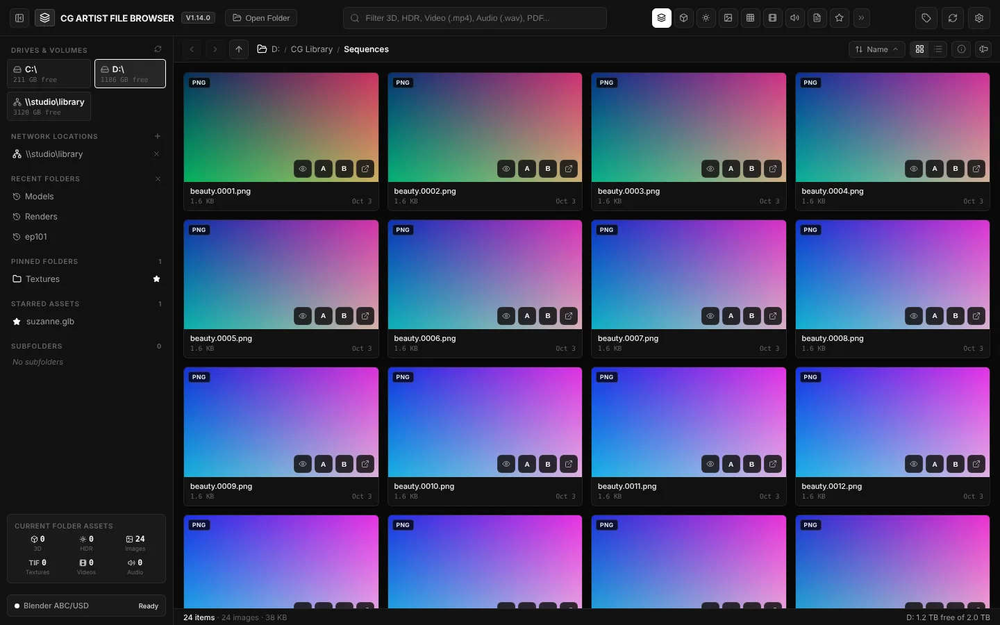
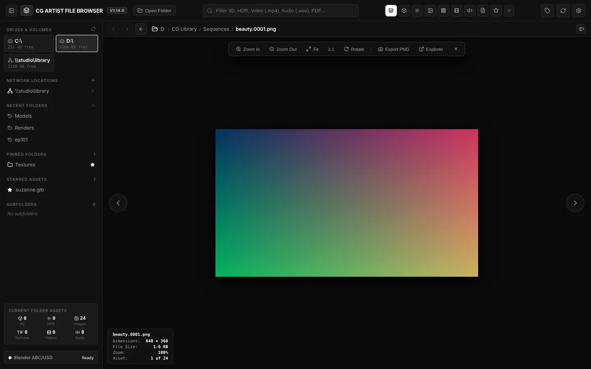

Deep dive
Image sequences
Numbered frame files such as beauty.0001.png, how they are found, and how to play them as one sequence.
What counts as a sequence
A sequence is a set of frames with the same name and a number that goes up, such as beauty.0001.png, beauty.0002.png and so on. Renders are often written this way. The frames stay separate in the folder view, so you can still see and select each one.

Playing a sequence
Right-click any frame and choose Play as sequence. The player shows the frames in order. Use it to check motion, flicker and missing frames before you hand a render on.

Found a mistake or something missing? Edit this page on GitHub.